Precision Grasp-A Circular Object Grasped by a Two-Fingered Robotic Hand
This one is a 2D example where a two-fingered hand is grasping a circular object with its fingertips. First, a model of the system is created. Then, some of the structural properties of the fully actuated grasp are characterized. Finally, the effect of underactuation on the system properties is evaluated by introducing one synergy.
The example is taken from [XX]. Please refer to that text for more details on these topics.
Contents
Problem Overview
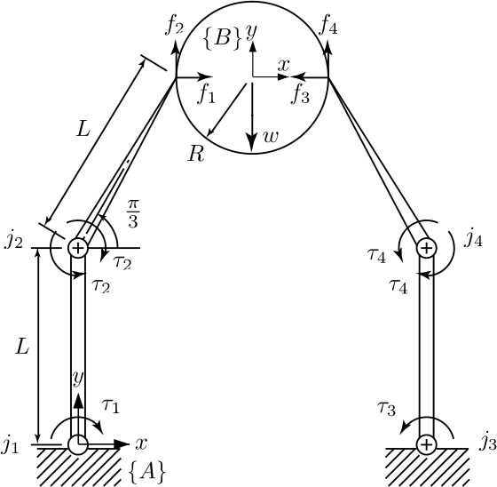
Consider the manipulation system in Fig. 1, where a two fingered hand is grasping a circular object of radius 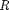 with its fingertips. Each finger is composed by two links of length 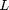. Globally, the hand has four revolute joints 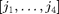. Attached to the palm an inertial frame 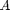 is fixed, with origin on the intersection between the axis of 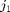 and the plane of the figure 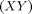.
Attached to the object a frame 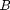 is posed, with origin in the center of the circle, initially parallel to . The generic displacement 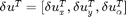 indicates a linear displacement along the axes 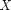 and 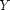 and an angular displacement along 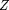. The displacement of the object is described in coordinates expressed in .
Contacts are modeled as planar hard fingers, i.e., the hand can exert only forces along the axes and , without moments. On the k- th contact point, two reference frames are introduced, respectively fixed to the hand and the object and aligned with in the reference configuration.
The following numerical values are assumed for the parameters: 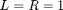 m, 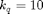 N/rad, 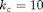 N/m, 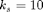 N/m, and an existing preload 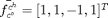 N is considered.
t = pi/3; ct = cos(t); st = sin(t); % from Fig. 1 L = 1; R = 1; % L, R lct = L*ct; lst = L*st; m = R +lct; n = 2*m;
Hand and Object Modeling
Hand Modeling
For each finger, the origin and -axis vectors of joint frames are stored as columns of two matrices, respectively P and Z (3x2); the forward kinematics map is evaluated at the reference configuration (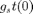) and is stored as g_st_0 (4x4). From Fig. 1 and the descriptions above, it follows that
P_1 = [0, 0; 0, L; 0, 0]; % P, Z and g_st_0 for finger 1 Z_1 = [0, 0; 0, 0; 1, 1]; g_st0_1 = transl(lct,L+lst,0); P_2 = [n, n; 0, L; 0, 0]; % P, Z and g_st_0 for finger 2 Z_2 = Z_1; g_st0_2 = transl(n-lct,L+lst,0);
Limb objects match the concept of hand's fingers and are built by the Limb constructor, which takes the above parameters as the first three input arguments. The name of a finger is optionally specified by using a property name / property value pair, where the property name is the string 'name' and the property value is the actual name of the finger.
f1 = Limb(Z_1, P_1, g_st0_1, 'name', 'fingerOne'); f2 = Limb(Z_2, P_2, g_st0_2, 'name', 'fingerTwo');
Limb|s |f1 and f2 are concatenated into a single array and are passed to the Hand object constructor to build the two-fingered hand model. The model is given a name and a comment. Similarly to name, the comment is specified by a property name / property value; in this case, the property name is the string 'comment'.
hnd = Hand([f1,f2], 'name', 'TwoFingerHand', 'comment', 'Gabiccini et Al. IJRR 2013 - Par. 9.1');
Object Modeling
The manipulated (target) object is simply created by the following command.
mob = ManipulatedObject('name', 'Ball');
The code line creates a manipulated object and attaches a default reference frame (with the same orientation as the world frame) to it. The object is given a name, passed to the ManipulatedObject constructor.
Glove and Cover Modeling
Glove Modeling_
A Glove is a data structure that enables the assignment of a specific set of Points of Interest (POIs) to a given hand model.
Cover Modeling_
YY